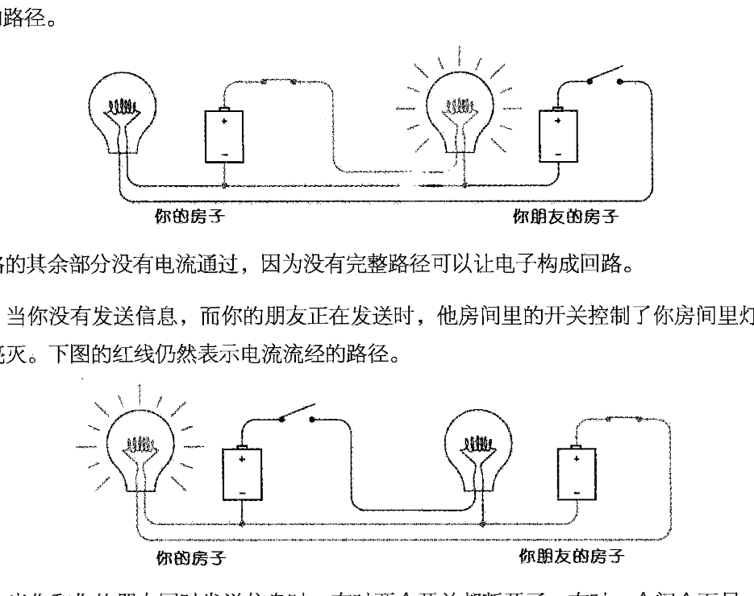

编码
所谓经典，就是历尽岁月的洗涤，依然毫不褪色，然其光彩却历久弥新
对任何能听见我们声音并理解我们所说的人来说，我们发出的声音所形成的词语就是一种编码
编码这个词的意思是指一种用来在机器和人之间传递信息的方式，编码就是交流--或者秘密的东西
摩尔斯电码
介绍编码，先从摩尔斯电码说起，摩尔斯电码是以点和划组成的一组编码
点和划的不同组合能组合成英语26个英文字母
从编码的出现来看，编码就是逻辑的表现，将人可理解的逻辑互相转换就是编码和解码的过程
除摩尔斯电码以外，曾经还出现过许多其他的编码，比如盲文，比如手语,比如文本
但是摩尔斯码不同，比如中文和英文的逻辑互换，主要是对于表达内容的互换，而摩尔斯电码是：表达形式的互换即将点和划----文本的对应关系
以下是摩尔电码表：

在上面的表中,点和划的不同组合形成了所有的英文字母
但是，有了对应的电码和字母的对应，可以将信息转换成电码
那么就有了一个问题，如何解码,让电码变成可以理解的内容
用最简单的办法：
就是将成对的，最简短，与电码对应内容的的对应关系排列出来
下面就是解码表

仔细观察以上解码表，可以发现点和划的二进制逻辑的体现。
码字的数目可以通过点和划的不同组合提高数量
所以摩尔斯电码可以将所有的“文本”信息表示进去。
手电筒
手电筒开关的电气电路
电灯泡的开关
公共电路的使用

公共电路的使用使互相传递信息得以实现
即：在一端开关，另一端得到信号的提示。只是这种初级的应用太过简陋。不适应更加复杂的模型
继电器和电报
下面是继电器

有过初中物理知识的都知道，在铁棒上绑上通电的线圈会产生电磁现象，即电磁铁会变得有磁性
而通过这一发明，使得电报机接收信息并呈现在书面得以实现
于是结合摩尔斯电码，远程传递信息实现了
另外，还有了中继站

中继站模拟开关的使用，使人为控制输出目标成为可能，但是不得不说，电磁感应的出现具有巨大得推动作用
二进制
二进制使信息得以传递，于是一个1，0传递得信息量就是一比特，而我们惯用得10进制比特就是2得10次方就是一个字节，这样的信息计算是常识，也是来源于信息的最初传递时使用二进制的
后来摩尔斯的二进制编码点，划改为1，0的表示方法，于是编码的数据表示法就可以转为比特来存储了
那么信息，即编码如何在电路里转换呢
这就涉及与和非得逻辑了

以上就是与和非得逻辑如果通过电路的不断累加，0，1，1的转换会在电路的逻辑上展现出来
那这就涉及二进制的加法器了
由于64个编码可以将英文这一语言的表达展现出来，那么需要多少个继电器呢？
以下是计算部分
- 与门，非门，或门需要两个继电器，如上图所示
- 异或门需要6个继电器
- 半加器由异或门和与门组成，需要8个继电器
- 全加器需要两个半加器和一个或门组成，需要18个继电器
- 8个全加器计算8位二进制加法器，需要144个继电器

这就是异或门的构造，由或门，与非门和与门形成
事实上现在计算的计算机编码都是16位的，所以需要两个全加器，如下

如上图所示：两个信号进行相加并联到高位，高位运算再并联到高位，更改任何一个输入都会产生变化
一个加法计算器产生了，不过还没完，还有减法计算器
如下图所示:是一个0，1的反向回路继电器

于是状态可以在0和1之间切换了，所有的与门，或门，非门加上这样的设计，就可以影响前置状态了，但是这样的设计是没有用，可以相互影响但是不能存留住状态，于是就有以下可以存留状态的设计

这个设计的关键在于上面电路的另外一根导线，未连通时电路是断开的，连接上面电路，上面或非门输出1，下面或非门也为1，上面导线连通的电路为通路，断开开关，左边上面导线开关连通，上面或非为1，下面或非门也为1，而闭合下面的开关，会导致灯泡熄灭，再关掉，会灯泡还是熄灭状态，因为上面的那根导线已经断路了
于是，一个完整的加减法计算器诞生了。
最为关键的是，可以根据计算保存状态信息，在计算器实现的同时也可以实现了锁存器

当需要写入时，将W端电路置为1，其余端口为0，这时会得到输出端存储的数据，当输入操作再次写入前，输出信息不变
一些基本的元件已经诞生了，剩下的任务是根据这些元件电路组合其来形成不同作用的作用更明显的元件。
其中最重要的是随机存储器，负责数据的存取，下面是随机存储器一个部件实现的电路图。备注：选择器的实现

S0,S1,S2是地址开关电路，D1-D7是数据输入端.根据地址码的输入的组合，形成不同的单一输出
现在还有一个重要的元件：译码器

译码器的是实现与选择器的电路相反，是根据地址码将不同的输入信息保存为不同的输出信息
这三个元件的实现就有了，根据写入和固定的地址保存了不同的信息，然后根据地址输出了反向的信息，即实现了信息的存取，没错，他们的组合就是RAM随机存储器。而它们越多，就能存取更多的数据。
在上面的元件组合后，已经能够根据电路编写指令了的接口，另外就需要控制器，根据不同的电路输入，做一些不同电路输入对应的标识物，比如键盘，然后在电路中设计根据不同标识组合形成输出和存储的数据，然后将输出连接在在RAM上，形成对数据的存取控制操作---这就诞生了控制器，即指令的编码。
后来随着研究的发展，用于寻址和存址的差分法---存储部件，运算部件--根据电路的条件跳转--信息存储的方法---真空管--控制论--操作系统的研究发现，使得--计算机真正的实现得到了可能
计算机的实现
冯-诺依曼结构
芯片----IC，集成电路
目标，集成更多的电路，使其可以计算更多的数据
衡量芯片的标准
- 计算数量
- 计算频率
- 寻址能力
为什么介绍芯片？因为从某个方面来说，所有程序的核心就是芯片，因为它奠定了计算机的基调--计算能力。
而这是计算机的核心。而冯诺依曼体系指的是：计算机的组成部分。输入设备，控制器，运算器，存储器，输出设备
以上就是计算机发展的大概历史和计算机的大概原理，当然，现在的技术发达，分工精细，手动造出一台计算机还是有难度的，根据不同硬件的性能参数组装一台计算机容易的多。
实用的部分
使计算机编码得以逐渐抽象，分工逐渐明确的的发现使 ---文件系统
图形化界面即绘图的API使计算机的普及变成了可能
在随后的时间里，从汇编到高级语言的演变，越底层的编码语言越靠近硬件功能，从硬件,编码技术的不断发展，越高级的语言分工和设计的理念不同作用也就有着不同的分歧。
解释：由于这篇文章只是原理性的文章，并不涉及实现，而且最后文件系统，图形化，以及不同语言间的理念内容其实可以写几篇不同的文章，就不赘述了，如果以后有时间，有机会深入的话，再更新部分内容